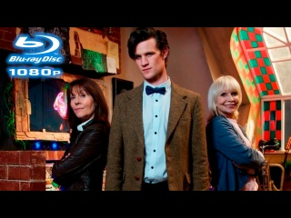
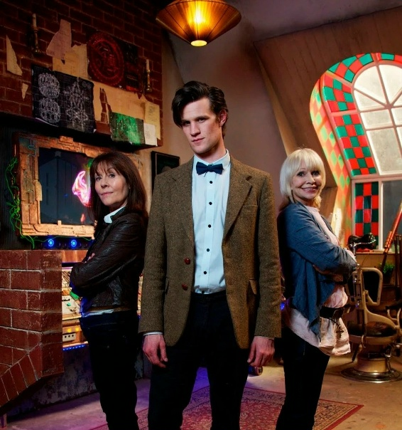
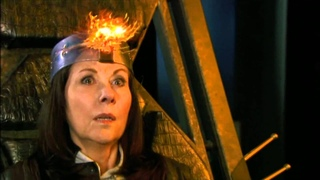

Death of the Doctor
Дата выхода: 25-26 октября 2010
Формат: 2 эпизода по 30 мин.
| Варианты озвучек: | * Разные: смотрите по инструкции |
|---|---|
| Скачивание и просмотр: |
Когда Доктора объявили умершим, его старые спутницы Сара Джейн и Джо Грант впервые встречаются, и объединив усилия хотят узнать правду, какой заговор строится вокруг Базы UNIT.

